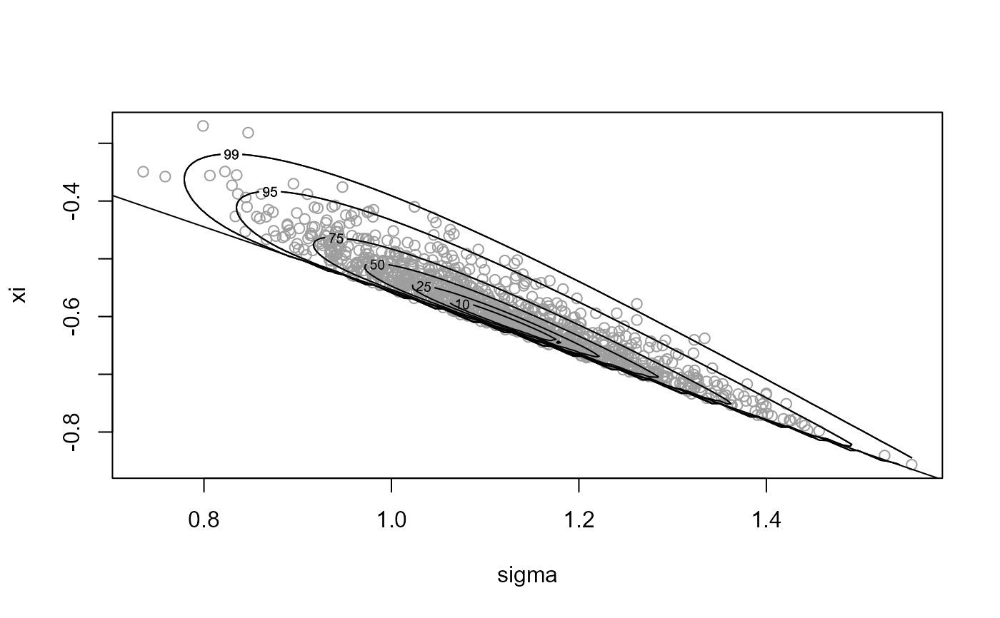
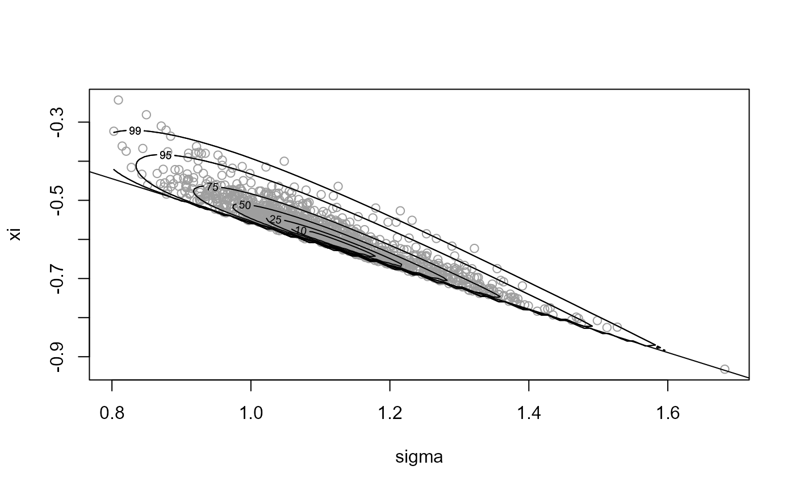
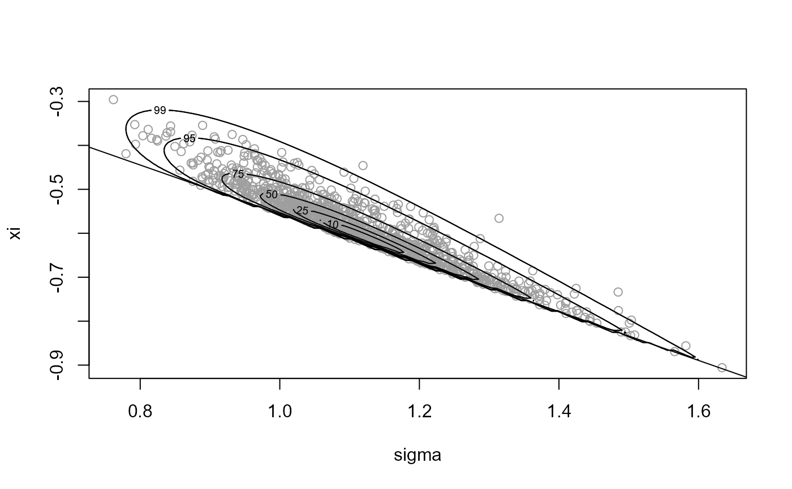
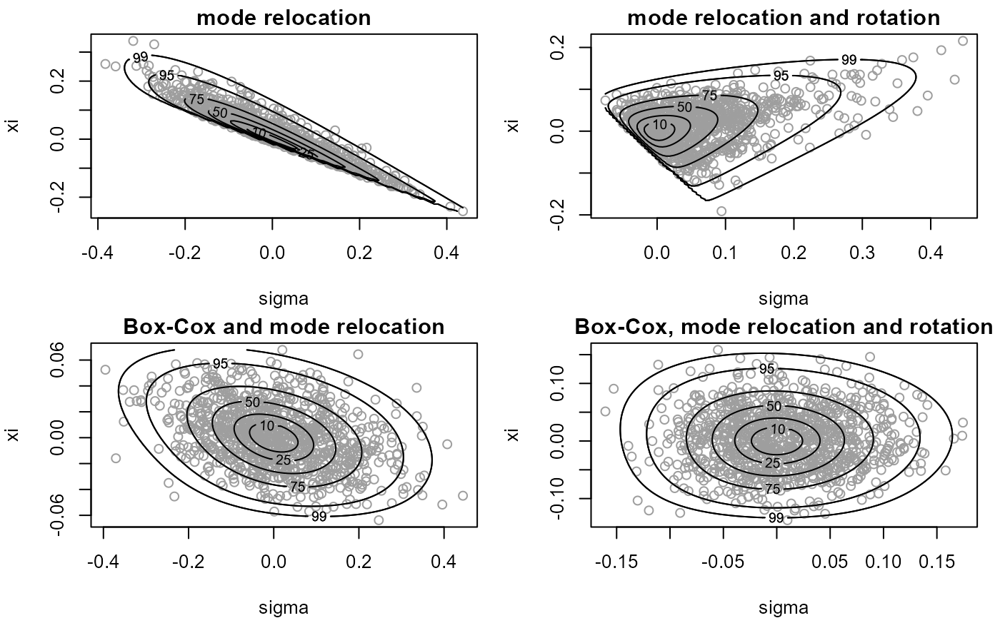

Finds a value of the Box-Cox transformation parameter lambda for which the (positive) random variable with log-density logf has a density closer to that of a Gaussian random variable. In the following we use theta to denote the argument of logf on the original scale and phi on the Box-Cox transformed scale.
find_lambda( logf, ..., d = 1, n_grid = NULL, ep_bc = 1e-04, min_phi = rep(ep_bc, d), max_phi = rep(10, d), which_lam = 1:d, lambda_range = c(-3, 3), init_lambda = NULL, phi_to_theta = NULL, log_j = NULL )
Arguments
| logf | A function returning the log of the target density f. |
|---|---|
| ... | further arguments to be passed to |
| d | A numeric scalar. Dimension of f. |
| n_grid | A numeric scalar. Number of ordinates for each variable in phi. If this is not supplied a default value of ceiling(2501 ^ (1 / d)) is used. |
| ep_bc | A (positive) numeric scalar. Smallest possible value of phi to consider. Used to avoid negative values of phi. |
| min_phi, max_phi | Numeric vectors. Smallest and largest values of phi at which to evaluate logf, i.e. the range of values of phi over which to evaluate logf. Any components in min_phi that are not positive are set to ep_bc. |
| which_lam | A numeric vector. Contains the indices of the components of phi that ARE to be Box-Cox transformed. |
| lambda_range | A numeric vector of length 2. Range of lambda over which to optimise. |
| init_lambda | A numeric vector of length 1 or d. Initial value of
lambda used in the search for the best lambda. If |
| phi_to_theta | A function returning (inverse) of the transformation from theta to phi used to ensure positivity of phi prior to Box-Cox transformation. The argument is phi and the returned value is theta. |
| log_j | A function returning the log of the Jacobian of the transformation from theta to phi, i.e. based on derivatives of phi with respect to theta. Takes theta as its argument. |
Value
A list containing the following components
A numeric vector. The value of lambda.
A numeric vector. Box-cox scaling parameter, estimated by the geometric mean of the values of phi used in the optimisation to find the value of lambda, weighted by the values of f evaluated at phi.
A numeric vector. An initial estimate of the mode of the Box-Cox transformed density
A numeric vector. Estimates of the marginal standard deviations of the Box-Cox transformed variables.
as detailed above (only if phi_to_theta is
supplied)
as detailed above (only if log_j is supplied)
Details
The general idea is to evaluate the density f on a d-dimensional
grid, with n_grid ordinates for each of the d variables.
We treat each combination of the variables in the grid as a data point
and perform an estimation of the Box-Cox transformation parameter
lambda, in which each data point is weighted by the density
at that point. The vectors min_phi and max_phi define the
limits of the grid and which_lam can be used to specify that only
certain components of phi are to be transformed.
References
Box, G. and Cox, D. R. (1964) An Analysis of Transformations. Journal of the Royal Statistical Society. Series B (Methodological), 26(2), 211-252.
Andrews, D. F. and Gnanadesikan, R. and Warner, J. L. (1971) Transformations of Multivariate Data, Biometrics, 27(4).
See also
ru and ru_rcpp to perform
ratio-of-uniforms sampling.
find_lambda_one_d and
find_lambda_one_d_rcpp to produce (somewhat) automatically
a list for the argument lambda of ru/ru_rcpp for the
d = 1 case.
find_lambda_rcpp for a version of
find_lambda that uses the Rcpp package to improve
efficiency.
Examples
# Log-normal density =================== # Note: the default value max_phi = 10 is OK here but this will not always # be the case lambda <- find_lambda(logf = dlnorm, log = TRUE) lambda#> $lambda #> [1] 0.05408856 #> #> $gm #> [1] 0.971952 #> #> $init_psi #> [1] -0.05181524 #> #> $sd_psi #> Var1 #> 0.8614544 #>x <- ru(logf = dlnorm, log = TRUE, d = 1, n = 1000, trans = "BC", lambda = lambda) # Gamma density =================== alpha <- 1 # Choose a sensible value of max_phi max_phi <- qgamma(0.999, shape = alpha) # [Of course, typically the quantile function won't be available. However, # In practice the value of lambda chosen is quite insensitive to the choice # of max_phi, provided that max_phi is not far too large or far too small.] lambda <- find_lambda(logf = dgamma, shape = alpha, log = TRUE, max_phi = max_phi) lambda#> $lambda #> [1] 0.2801406 #> #> $gm #> [1] 0.5525366 #> #> $init_psi #> [1] -0.2060046 #> #> $sd_psi #> Var1 #> 0.573372 #>x <- ru(logf = dgamma, shape = alpha, log = TRUE, d = 1, n = 1000, trans = "BC", lambda = lambda) # \donttest{ # Generalized Pareto posterior distribution =================== # Sample data from a GP(sigma, xi) distribution gpd_data <- rgpd(m = 100, xi = -0.5, sigma = 1) # Calculate summary statistics for use in the log-likelihood ss <- gpd_sum_stats(gpd_data) # Calculate an initial estimate init <- c(mean(gpd_data), 0) n <- 1000 # Sample on original scale, with no rotation ---------------- x1 <- ru(logf = gpd_logpost, ss = ss, d = 2, n = n, init = init, lower = c(0, -Inf), rotate = FALSE) plot(x1, xlab = "sigma", ylab = "xi")# Parameter constraint line xi > -sigma/max(data) # [This may not appear if the sample is far from the constraint.] abline(a = 0, b = -1 / ss$xm)#> ru bounding box: #> box vals1 vals2 conv #> a 1.0000000 0.0000000 0.0000000 0 #> b1minus -0.1369021 -0.2167016 0.1440474 0 #> b2minus -0.1012008 0.3002527 -0.1769293 0 #> b1plus 0.1723149 0.3066705 -0.1794179 0 #> b2plus 0.1018379 -0.2157067 0.1827935 0 #> #> estimated probability of acceptance: #> [1] 0.1229407 #> #> sample summary #> V1 V2 #> Min. :0.7352 Min. :-0.8565 #> 1st Qu.:1.0248 1st Qu.:-0.6404 #> Median :1.1104 Median :-0.5884 #> Mean :1.1159 Mean :-0.5854 #> 3rd Qu.:1.1990 3rd Qu.:-0.5292 #> Max. :1.5550 Max. :-0.2699# Sample on original scale, with rotation ---------------- x2 <- ru(logf = gpd_logpost, ss = ss, d = 2, n = n, init = init, lower = c(0, -Inf)) plot(x2, xlab = "sigma", ylab = "xi")#> ru bounding box: #> box vals1 vals2 conv #> a 1.00000000 0.00000000 0.00000000 0 #> b1minus -0.03663864 -0.05333344 0.03665032 0 #> b2minus -0.05979424 0.03787947 -0.10453821 0 #> b1plus 0.11686608 0.27226212 0.09425559 0 #> b2plus 0.06017065 0.12080097 0.10800305 0 #> #> estimated probability of acceptance: #> [1] 0.4180602 #> #> sample summary #> V1 V2 #> Min. :0.8027 Min. :-0.9319 #> 1st Qu.:1.0250 1st Qu.:-0.6410 #> Median :1.0987 Median :-0.5759 #> Mean :1.1114 Mean :-0.5812 #> 3rd Qu.:1.1913 3rd Qu.:-0.5274 #> Max. :1.6820 Max. :-0.2435# Sample on Box-Cox transformed scale ---------------- # Find initial estimates for phi = (phi1, phi2), # where phi1 = sigma # and phi2 = xi + sigma / max(x), # and ranges of phi1 and phi2 over over which to evaluate # the posterior to find a suitable value of lambda. temp <- do.call(gpd_init, ss)min_phi <- pmax(0, temp$init_phi - 2 * temp$se_phi) max_phi <- pmax(0, temp$init_phi + 2 * temp$se_phi) # Set phi_to_theta() that ensures positivity of phi # We use phi1 = sigma and phi2 = xi + sigma / max(data) phi_to_theta <- function(phi) c(phi[1], phi[2] - phi[1] / ss$xm) log_j <- function(x) 0 lambda <- find_lambda(logf = gpd_logpost, ss = ss, d = 2, min_phi = min_phi, max_phi = max_phi, phi_to_theta = phi_to_theta, log_j = log_j) lambda#> $lambda #> [1] 0.09933543 0.34744749 #> #> $gm #> [1] 1.09845170 0.02556552 #> #> $init_psi #> [1] 0.09837088 -0.18672342 #> #> $sd_psi #> Var1 Var2 #> 0.12398790 0.02140347 #> #> $phi_to_theta #> function(phi) c(phi[1], phi[2] - phi[1] / ss$xm) #> <environment: 0x000000002066fa20> #> #> $log_j #> function(x) 0 #> <environment: 0x000000002066fa20> #># Sample on Box-Cox transformed, without rotation x3 <- ru(logf = gpd_logpost, ss = ss, d = 2, n = n, trans = "BC", lambda = lambda, rotate = FALSE) plot(x3, xlab = "sigma", ylab = "xi")#> ru bounding box: #> box vals1 vals2 conv #> a 1.00000000 0.00000000 0.00000000 0 #> b1minus -0.15087781 -0.25064509 0.02252029 0 #> b2minus -0.02780914 0.07119839 -0.04319687 0 #> b1plus 0.15335514 0.25612939 -0.01324478 0 #> b2plus 0.02921024 -0.09995582 0.04787656 0 #> #> estimated probability of acceptance: #> [1] 0.4873294 #> #> sample summary #> V1 V2 #> Min. :0.7616 Min. :-0.9059 #> 1st Qu.:1.0220 1st Qu.:-0.6337 #> Median :1.0995 Median :-0.5776 #> Mean :1.1110 Mean :-0.5813 #> 3rd Qu.:1.1927 3rd Qu.:-0.5284 #> Max. :1.6336 Max. :-0.2959# Sample on Box-Cox transformed, with rotation x4 <- ru(logf = gpd_logpost, ss = ss, d = 2, n = n, trans = "BC", lambda = lambda) plot(x4, xlab = "sigma", ylab = "xi")#> ru bounding box: #> box vals1 vals2 conv #> a 1.00000000 0.000000000 0.000000000 0 #> b1minus -0.06205059 -0.100623517 0.007615170 0 #> b2minus -0.06089188 -0.002795403 -0.094585379 0 #> b1plus 0.06729363 0.113539100 0.004925744 0 #> b2plus 0.06395978 -0.006512538 0.104832214 0 #> #> estimated probability of acceptance: #> [1] 0.534188 #> #> sample summary #> V1 V2 #> Min. :0.7522 Min. :-0.8546 #> 1st Qu.:1.0202 1st Qu.:-0.6394 #> Median :1.1066 Median :-0.5808 #> Mean :1.1142 Mean :-0.5827 #> 3rd Qu.:1.2016 3rd Qu.:-0.5233 #> Max. :1.5550 Max. :-0.2895def_par <- graphics::par(no.readonly = TRUE) par(mfrow = c(2,2), mar = c(4, 4, 1.5, 1)) plot(x1, xlab = "sigma", ylab = "xi", ru_scale = TRUE, main = "mode relocation") plot(x2, xlab = "sigma", ylab = "xi", ru_scale = TRUE, main = "mode relocation and rotation") plot(x3, xlab = "sigma", ylab = "xi", ru_scale = TRUE, main = "Box-Cox and mode relocation") plot(x4, xlab = "sigma", ylab = "xi", ru_scale = TRUE, main = "Box-Cox, mode relocation and rotation")